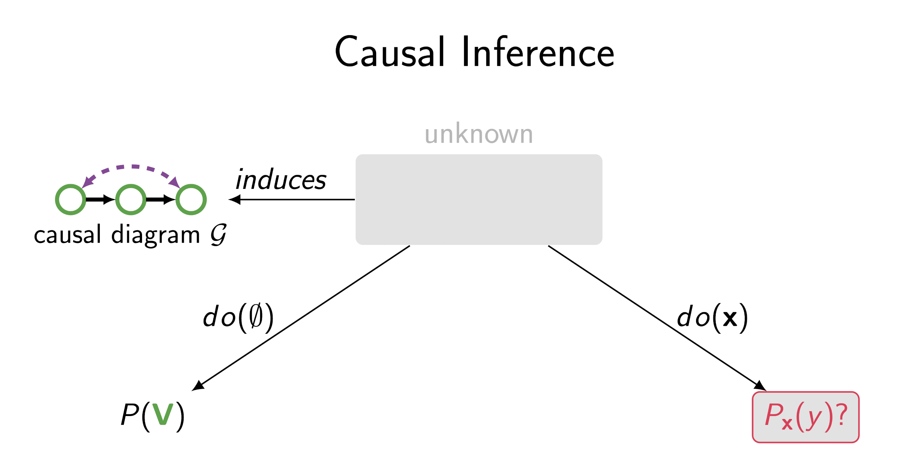
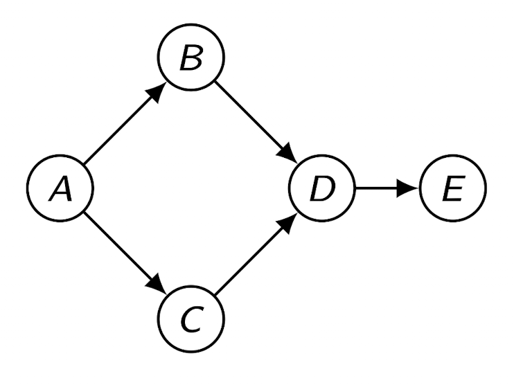
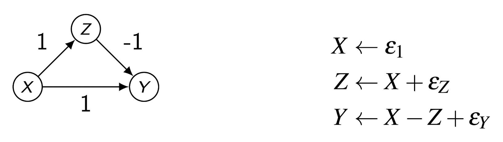

1. Introduction: Causal Inference vs. Causal Discovery
인과추론(Causal Inference)의 세계는 크게 두 가지 연구 주제로 나뉩니다.
우리가 흔히 접하는 인과추론은 인과 그래프(Causal Diagram, \(\mathcal{G}\))가 이미 주어져 있다고 가정하고, 특정 개입(Intervention, \(do(x)\))이 결과에 미치는 확률분포 \(P_x(y)\)를 추정하는 문제입니다.
하지만 현실에서는 인과 그래프 자체를 알 수 없는 경우가 많습니다.
Causal Discovery (혹은 Structure Learning)는 이 역문제(Inverse Problem)를 다룹니다.
즉, 관측된 데이터의 확률분포 \(P(\mathbf{V})\)로부터 데이터 생성 과정을 가장 잘 설명하는 인과 그래프 \(\mathcal{G}\)를 찾아내는 과정입니다.

The Difficulty: Correlation is not Causation
“상관관계는 인과관계를 의미하지 않는다”는 명제는 Causal Discovery가 왜 어려운지를 단적으로 보여줍니다.
예를 들어, ’수탉의 울음(Rooster)’과 ’일출(Sun)’이라는 두 변수가 완벽하게 상관관계를 갖는 데이터가 있다고 가정해 봅시다.
데이터 테이블이 아래와 같이 주어졌을 때:
\[ \begin{array}{cc} \text{Rooster} & \text{Sun} \\ 0 & 0 \\ 1 & 1 \\ 0 & 0 \\ \vdots & \vdots \end{array} \]
- 이 데이터만으로는 \(Rooster \rightarrow Sun\)인지, \(Sun \rightarrow Rooster\)인지, 아니면 제3의 요인이 둘 다를 유발하는지 구별할 수 없습니다.
- 데이터 \(P(\mathbf{V})\)와 호환(Consistent)되는 그래프의 후보는 여러 개가 존재할 수 있으며, Causal Discovery의 목표는 이 후보군(Equivalence Class)을 찾아내는 것입니다.
2. DAG Models & Causal Sufficiency
- Causal Discovery를 수행하기 위해서는 먼저 모델에 대한 정의와 가정이 필요합니다.
- 우리는 변수 집합 \(\mathbf{V}\)에 대한 인과 구조를 DAG (Directed Acyclic Graph)로 표현합니다.
Definition: Causal Structure
- 변수 집합 \(\mathbf{V}\)의 인과 구조는 DAG로 표현되며, 각 노드는 변수에 대응하고 방향성이 있는 엣지(Edge)는 변수 간의 직접적인 함수적 관계(Direct functional relationship)를 나타냅니다.
Assumption: Causal Sufficiency
- 가장 강력하면서도 기본적인 가정은 Causal Sufficiency입니다.
- 이는 우리가 분석하는 변수 집합 \(\mathbf{V}\) 내의 변수들에 영향을 미치는 관측되지 않은 교란 변수(Unmeasured Confounder)가 존재하지 않는다는 가정입니다.
- 만약 이 가정이 위배된다면(즉, Latent Confounder가 있다면), 우리는 DAG 대신 양방향 엣지가 포함된 더 복잡한 그래프 모델(예: ADMG)을 고려해야 합니다.
3. Connection between Graph and Distribution
- 그래프 \(\mathcal{G}\)와 데이터의 확률분포 \(P(\mathbf{V})\)를 연결하는 세 가지 핵심 정의가 있습니다.
- DAG 모델에서는 이 세 가지가 서로 밀접하게 연관됩니다.

1. Factorization
- 확률분포 \(P(\mathbf{V})\)는 그래프상의 부모 노드(Parents) 조건부 확률들의 곱으로 표현될 수 있습니다. \[P(A, B, C, D, E) = P(E|D)P(D|B,C)P(C|A)P(B|A)P(A)\]
2. Local Markov Property
- DAG의 각 변수는 자신의 부모가 주어졌을 때, 자신의 자손(Descendants)이 아닌 모든 변수와 조건부 독립입니다.
\[(C \perp\!\!\!\perp B \mid A), \quad (D \perp\!\!\!\perp A \mid B, C), \quad (E \perp\!\!\!\perp A, B, C \mid D)\]
3. Global Markov Property (\(d\)-separation)
- 가장 일반적인 성질로, 그래프상에서 \(d\)-separation된 두 변수 집합은 확률분포상에서도 조건부 독립(Conditional Independence)이어야 함을 의미합니다.
\[\text{A is } d\text{-separated from B given C in } \mathcal{G} \implies (A \perp\!\!\!\perp B \mid C) \text{ in } P(\mathbf{V})\]
- 이 성질은 그래프의 구조적 분리(\(d\)-separation)가 데이터의 통계적 독립성으로 나타난다는 것을 보장합니다.
4. The Challenge of Structure Learning
Structure Learning은 “데이터의 독립성 정보(\(P(\mathbf{V})\))를 보고 그래프의 구조(\(\mathcal{G}\))를 역으로 알아내는 것”입니다.
하지만 여기서 논리적인 장벽에 부딪힙니다.
Global Markov Property는 일방향 함의(One-way implication)입니다.
\[d\text{-separation}_{\mathcal{G}} \implies \text{Independence}_{P}\]
- 이 명제의 대우를 취하면 다음과 같습니다:
\[\text{Dependence}_{P} \implies d\text{-connection}_{\mathcal{G}}\]
즉, 데이터에서 두 변수가 종속적이라면 그래프상에서 연결되어 있어야 합니다.
하지만, 데이터에서 독립이라고 해서 반드시 그래프에서 끊어져 있어야 한다는 보장은 없습니다.
예를 들어, 모든 노드가 서로 연결된 완전 연결 그래프(Fully Connected Graph)는 어떠한 \(d\)-separation도 없으므로, 데이터의 어떠한 독립성 정보와도 모순되지 않습니다.
따라서 단순히 Global Markov Property만으로는 수많은 가능한 그래프 중 가장 합리적인 하나를 특정할 수 없습니다.
우리는 데이터의 독립성을 그래프의 비연결성(separation)으로 해석하기 위해 역방향의 가정이 필요합니다.
5. Faithfulness Assumption
- Structure Learning을 가능하게 하기 위해 도입된 핵심 가정이 바로 Faithfulness입니다.
Definition: Faithfulness
\[A \text{ is } d\text{-separated from } B \text{ given } C \text{ in } \mathcal{G} \iff (A \perp\!\!\!\perp B \mid C) \text{ in } P(\mathbf{V})\]
즉, 그래프에서의 \(d\)-separation과 확률분포에서의 조건부 독립이 필요충분조건이 된다고 가정하는 것입니다.
이 가정이 있다면:
- 데이터에서 관측된 독립성 \(\rightarrow\) 그래프에서의 엣지 제거 (\(d\)-separation)
- 데이터에서 관측된 종속성 \(\rightarrow\) 그래프에서의 엣지 연결 (\(d\)-connection)
Justification & Limitations
- Faithfulness는 얼마나 타당한 가정일까요?
- 이론적으로, 무작위로 생성된 확률분포 \(P(\mathbf{V})\)가 Unfaithful할 확률은 0(measure zero)입니다.
- 즉, 대부분의 분포는 Faithful 합니다.
- 하지만 현실적인 문제들이 존재합니다:
- Finite Samples: 데이터가 유한할 때, 실제로는 연결되어 있지만 효과가 매우 미미한 경우(Nearly Unfaithful)를 통계적으로 독립과 구별하기 어렵습니다.
- Homeostasis (항상성): 자연계, 특히 생물학적 시스템에서는 진화적 이유로 상쇄 효과(Cancellation)가 발달하여 Unfaithful한 상황이 드물지 않게 발생할 수 있습니다.
6. Violation of Faithfulness (Example)
Faithfulness가 위배되는 대표적인 사례는 서로 다른 경로의 인과 효과가 정확히 상쇄(Cancel out)되어, 실제로는 인과관계가 있음에도 데이터상으로는 독립으로 나타나는 경우입니다.
다음과 같은 구조적 방정식 모델(Structural Equation Model)을 고려해 봅시다.
Model Setup
- Graph: \(X \rightarrow Z\), \(X \rightarrow Y\), \(Z \rightarrow Y\) (Triangle structure)
- Parameters:
- \(X \rightarrow Z\): 계수 \(+1\)
- \(Z \rightarrow Y\): 계수 \(-1\)
- \(X \rightarrow Y\): 계수 \(+1\) (Direct effect)

- 수식으로 표현하면: \[ \begin{align} X &= \epsilon_X \\ Z &= 1 \cdot X + \epsilon_Z \\ Y &= 1 \cdot X - 1 \cdot Z + \epsilon_Y \end{align} \]
- 여기서 오차항 \(\epsilon\)들은 서로 독립입니다.
Derivation of Cancellation
- 이제 \(Y\)를 \(X\)와 \(\epsilon\)들에 대해 정리해 봅시다. \[ \begin{align} Y &= X - Z + \epsilon_Y \\ &= X - (X + \epsilon_Z) + \epsilon_Y \\ &= X - X - \epsilon_Z + \epsilon_Y \\ &= -\epsilon_Z + \epsilon_Y \end{align} \]
- 결과적으로 \(Y\)는 \(X\)라는 항을 포함하지 않게 됩니다.
- 따라서 \(Cov(X, Y) = 0\)이 되고, 만약 가우시안 분포를 따른다면 \(X\)와 \(Y\)는 통계적으로 독립입니다.
Conclusion
Data (\(P(\mathbf{V})\)): \(X \perp\!\!\!\perp Y\) (독립)
Graph (\(\mathcal{G}\)): \(X\)와 \(Y\)는 \(d\)-connected (연결됨)
데이터만 보면 \(X\)와 \(Y\) 사이에 아무런 관계가 없어 보여 엣지를 제거하게 되지만, 실제로는 두 개의 경로(\(X \to Y\)와 \(X \to Z \to Y\))가 서로를 완벽하게 상쇄하고 있었던 것입니다.
이것이 바로 Faithfulness 위배 사례입니다.
7. Summary
- 이번 포스트에서는 Causal Discovery의 기초 개념과 핵심 가정을 다루었습니다.
- Causal Discovery: 데이터로부터 인과 그래프를 역추적하는 비지도 학습 문제.
- DAG Models: Factorization, Local Markov, Global Markov 성질을 통해 그래프와 분포를 연결.
- Structure Learning의 난점: 분포의 독립성은 그래프의 분리를 암시하지 않음 (Global Markov는 일방향).
- Faithfulness 가정: \(d\)-separation \(\iff\) Conditional Independence를 가정함으로써 역추론을 가능하게 함. 하지만 경로 상쇄(Cancellation) 등의 예외가 존재할 수 있음.
- 다음 포스트에서는 이러한 가정하에 실제로 그래프를 찾아내는 알고리즘들(PC Algorithm 등)에 대해 다루겠습니다.